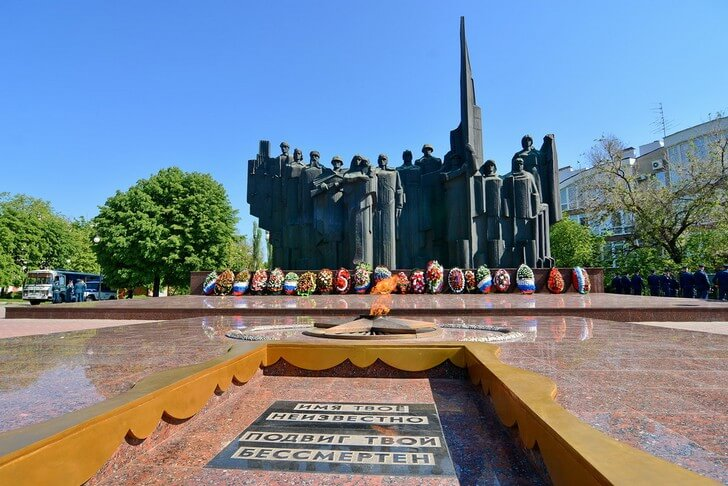

Одна из центральных площадей Воронежа, на которой располагается мемориальный комплекс в честь защитников города. Ее открытие состоялось в 1975 году к 30-летнему юбилею Победы. Монументальный памятник из красного гранита и металла находится в северной оконечности. Он состоит из 12 фигур, изображающих все рода войск Советской Армии, а также партизан и ополченцев. Перед безмолвно застывшими изваяниями горит Вечный огонь.
